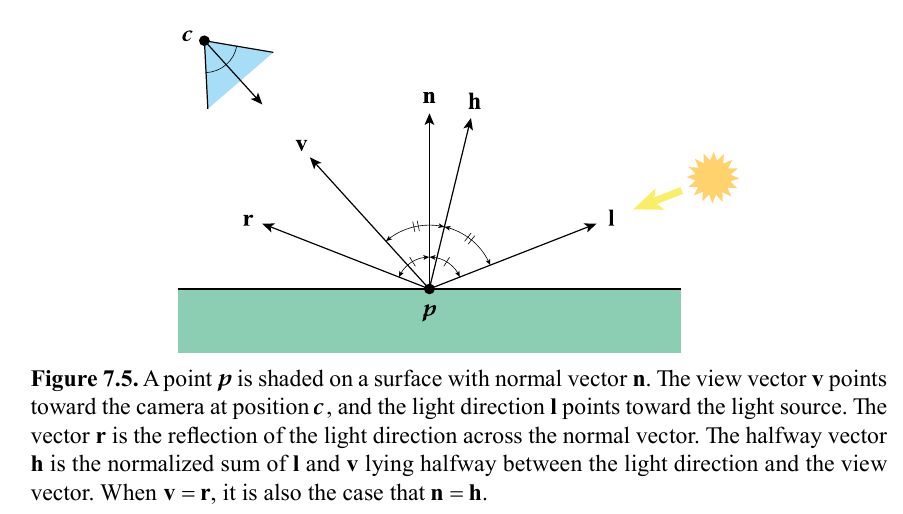
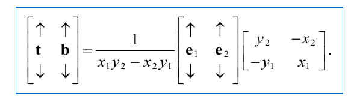
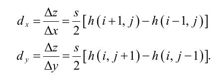
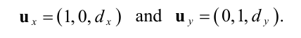
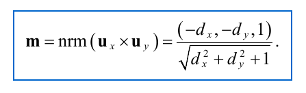
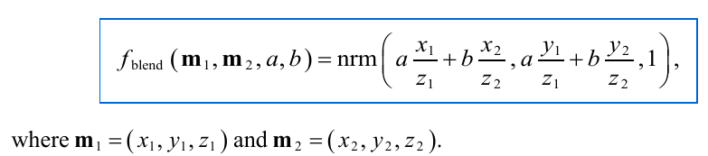
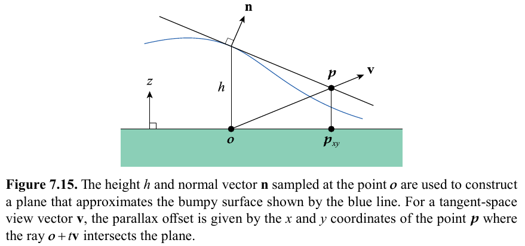
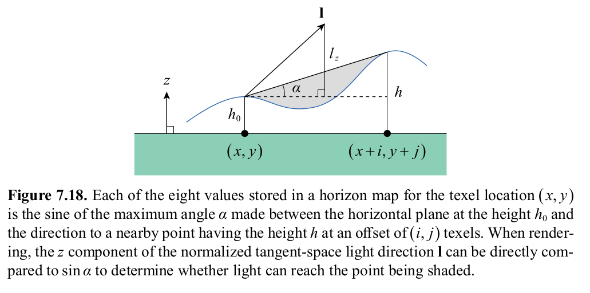

Terms
| p | Point on surface being rendered |
| c | Camera position |
| v | view vector, = normalize(c - p) |
| n | Surface normal |
| l | Light direction |
| Φv | luminous flux, energy exiting surface |
| dA | Area surrounding point p |
| dω | angle which makes projection plane covered by rendered pixel. |
Lv(p,v) = (d2Φ v) / (dω dA (dot(n,v)))
Cshaded = fambient(Cambient,v) + sumk=1..n(fdirect(Cillumk,n,v,lk))
fambient = contribution from ambient illumination, ex. material emission
sum k=1..n is for n number of input light sources
fdirect = luminance from direction lk reflected to direction v = Cillumk fBRDF(n,v,lk) sat(dot(n,lk))
BRDF = bidirectional reflectance distribution function
Illuminance Ev = Cillum sat(dot(n,l))
sat() prevents negative values
fdirect(Cillum,n,l,v) = (p/pi) Cdiffuse Cillum sat(dot(n,l))
p = albedo (scalar, max = 1)
Example diffuse calculation in pixel shader:
uniform float3 diffuseColor; // (rho / pi) * C_diffuse
uniform float3 ambientColor; // pi * C_ambient
uniform float3 lightColor; // C_illum
float3 CalculateDiffuseReflection(float3 n, float3 l)
{
float3 directColor = lightColor * saturate(dot(n, l));
return ((ambientColor + directColor) * diffuseColor);
}
Light reflection vector: r = 2 (dot(n,l)) n - l
Halfway vector (between light dir and view dir): h = normalize(l+v)
Blinn-phong specular reflection: S = Cspecular Cillum (sat(dot(n,h)))a
a = specular power exponent; higher value = sharper highlights
direct lighting combined diffuse and specular: fdirect(Cillum,n,l,v) = {(p/pi) Cdiffuse sat(dot(n,l)) + Cspecular (sat(dot(n,h)))a} Cillum
Example specular reflection shader code:
uniform float3 specularColor; // C_specular
uniform float3 lightColor; // C_illum
float3 CalculateSpecularReflection(float3 n, float3 h, float alpha, float nl)
{
float highlight = pow(saturate(dot(n,h)), alpha) * float(nl > 0.0);
return lightColor * specularColor * highlight;
}
Environment map sampling example shader code:
uniform TextureCube environmentMap;
uniform float3 Menv[3];
float4 SampleEnvironmentMap(float3 n, float3 v)
{
float3 r = n * (2.0 * dot(n,v)) - v;
float3 texcoord = float3(dot(Menv[0], r), dot(Menv[1], r), dot(Menv[2], r));
return texture(environmentMap, texcoord);
}
TBN matrix = tangent, bitangent, normal as columns of 3x3 matrix
tangent, bitangent calculation from 3 points and uv coordinate, e1 = p1-p0, e2 = p2 - p0, (x1,y1) = (u1-u0,v1-v0), (x2,y2) = (u2-u0, v2-v0):
Bitangent calculation from tangent, normal: b = sign(Mtangent) (cross(n,t))
Example tangent calculation from vertices & texture coordinates:
void CalculateTangents(int32 triangleCount, const Triangle *triangleArray,
int32 vertexCount, const Point3D *vertexArray, const Vector3D *normalArray,
const Point2D *texcoordArray, Vector4D *tangentArray)
{
// Allocate temporary storage for tangents and bitangents and initialize to zeros.
Vector3D *tangent = new Vector3D[vertexCount * 2];
Vector3D *bitangent = tangent + vertexCount;
for (int32 i = 0; i < vertexCount; i++)
{
tangent[i].Set(0.0F, 0.0F, 0.0F);
bitangent[i].Set(0.0F, 0.0F, 0.0F);
}
// Calculate tangent and bitangent for each triangle and add to all three vertices.
for (int32 k = 0; k < triangleCount; k++)
{
int32 i0 = triangle[k].index[0];
int32 i1 = triangle[k].index[1];
int32 i2 = triangle[k].index[2];
const Point3D& p0 = position[i0];
const Point3D& p1 = position[i1];
const Point3D& p2 = position[i2];
const Point2D& w0 = texcoord[i0];
const Point2D& w1 = texcoord[i1];
const Point2D& w2 = texcoord[i2];
Vector3D e1 = p1 − p0, e2 = p2 − p0;
float x1 = w1.x − w0.x, x2 = w2.x − w0.x;
float y1 = w1.y − w0.y, y2 = w2.y − w0.y;
float r = 1.0F / (x1 * y2 − x2 * y1);
Vector3D t = (e1 * y2 − e2 * y1) * r;
Vector3D b = (e2 * x1 − e1 * x2) * r;
tangent[i0] += t;
tangent[i1] += t;
tangent[i2] += t;
bitangent[i0] += b;
bitangent[i1] += b;
bitangent[i2] += b;
}
// Orthonormalize each tangent and calculate the handedness.
for (int32 i = 0; i < vertexCount; i++)
{
const Vector3D& t = tangent[i];
const Vector3D& b = bitangent[i];
const Vector3D& n = normalArray[i];
tangentArray[i].xyz() = Normalize(Reject(t, n));
tangentArray[i].w = (Dot(Cross(t, b), n) > 0.0F) ? 1.0F : −1.0F;
}
delete[] tangent;
}
Can be calculated from height maps and their tangents/slopes
  h(i,j) is the height value in range [0,1] in the height map, s is a scale factor e.g. 24
Code to generate a normal map from the height map:
void ConstructNormalMap(const float *heightMap, Vector3D *normalMap,
int32 width, int32 height)
{
for (int32 y = 0; y < size.y; y++)
{
int32 ym1 = (y − 1) & (height − 1), yp1 = (y + 1) & (height − 1);
const float *centerRow = heightMap + y * width;
const float *upperRow = heightMap + ym1 * width;
const float *lowerRow = heightMap + yp1 * width;
for (int32 x = 0; x < size.x; x++)
{
int32 xm1 = (x − 1) & (width − 1), xp1 = (x + 1) & (width − 1);
// Calculate slopes.
float dx = (centerRow[xp1] − centerRow[xm1]) * 0.5F;
float dy = (lowerRow[x] − upperRow[x]) * 0.5F;
// Normalize and clamp.
float nz = 1.0F / sqrt(nx * nx + ny * ny + 1.0F);
float nx = fmin(fmax(−dx * nz, −1.0F), 1.0F);
float ny = fmin(fmax(−dy * nz, −1.0F), 1.0F);
normalMap[x].Set(nx, ny, nz);
}
normalMap += width;
}
}
And code to use the normal map in a shader:
uniform Texture2D normalMap;
float3 FetchNormalVector(float2 texCoord)
{
float2 m = texture(normalMap, texCoord).xy;
return float3(m, sqrt(1.0 - m.x*m.x - m.y*m.y));
}
Code to get the tangent-space view direction vector v and light direction l. The w componenent of the tangent contains the handedness of the tangent frame for bitangent calc
uniform float3 cameraPosition; // object space camera pos
uniform float3 lightPosition; // object-space light position
void CalculateTangentSpaceVL(float3 position, float3 normal, float4 tangent,
out float3 vtan, out float3 ltan)
{
float3 bitangent = cross(normal, tangent.xyz) * tangent.w;
float3 v = cameraPosition - position;
float3 l = lightPosition - position;
vtan = float3(dot(tangent, v), dot(bitangent, v), dot(normal, v)); // TBN matrix mul
ltan = float3(dot(tangent, l), dot(bitangent, l), dot(normal, l));
}
Normal map usage shader code, but also transforming into object-space (sigma is handedness):
uniform Texture2D normalMap;
float3 FetchObjectNormalVector(float2 texCoord, float3 normal, float3 tangent, float sigma)
{
float3 m = FetchNormalVector(texCoord);
float3 n = normalize(normal);
float3 t = normalize(tangent - n * dot(tangent, n));
float3 b = cross(normal, tangent) * sigma;
return t * m.x + b * m.y + n * m.z;
}
Blending normals m1, m2 with weights a,b:
Modified normal/bump mapping to smooth/interpolate differences in heights to improve quality. Calculates and adds offset p to the texture coordinates.
pxy = nzhvxy
nzh is precomputed and stored in a parallax map texture.
Pixel shader code using a parallax map:
uniform Texture2D parallaxMap;
float2 ApplyParallaxOffset(float2 texCoord, float3 vdir, float2 scale)
{
float2 pdir = vdir.xy * scale;
for (int i=0; i<4; i++)
{
// fetch n.z * h from map
float parallax = texture(parallaxMap, texCoord).x;
texCoord += pdir * parallax;
}
return texCoord;
}
Used to make bump/normal maps cast shadows. Uses tangent space light direction to tell if light source high enough above horizon to illuminate the shaded point. Is also dynamic and works with light movement. Is created from height map.
Code to calculate horizon map and ambient occlusion map:
void ConstructHorizonMap(const float *heightMap, ColorRGBA *horizonMap,
float *ambientMap, float ambientPower, int32 width, int32 height)
{
constexpr int kAngleCount = 32; // Must be at least 16 and a power of 2.
constexpr float kAngleIndex = float(kAngleCount) / two_pi;
constexpr int kHorizonRadius = 16;
for (int32 y = 0; y < height; y++)
{
const float* centerRow = heightMap + y*width;
for (int32 x = 0; x < width; x++)
{
// Get central height. Initialize max squared tangent array to all zeros.
float h0 = centerRow[x];
float maxTan2[kAngleCount] = {};
// Search neighborhood for larger heights
for (int32 j = -kHorizonRadius + 1; j < kHorizonRadius; j++)
{
const float* row = heightMap + ((y+j) & (height-1)) * width;
for (int32 i = -kHorizonRadius + 1; i < kHorizonRadius; i++)
{
int32 r2 = i*i + j*j;
if ((r2 < kHorizonRadius*kHorizonRadius) && (r2 != 0))
{
float dh = row[(x+i) & (width-1)] - h0;
if (dh > 0.0f)
{
// larger height found, apply to array entries
float direction = atan2(float(j), float(i));
float delta = atan(0.7071f / sqrt(float(r2)));
int32 minIndex = int32(floor((direction - delta) * kAngleIndex));
int32 maxIndex = int32(ceil((direction + delta) * kAngleIndex));
// calculate squared tangent with equation 7.53
float t = dh*dh / float(r2);
for (int32 n = minIndex; n <= maxIndex; n++)
{
int32 m = n & (kAngleCount - 1);
maxTan2[m] = fmax(maxTan2[m], t);
}
}
}
}
}
// Generate eight channels of horizon map
ColorRGBA* layerData = horizonMap;
for (int32 layer = 0; layer < 2; layer++)
{
ColorRGBA color(0.0f,0.0f,0.0f,0.0f);
int32 firstIndex = kAngleCount/16 + layer * (kAngleCount/2);
int32 lastIndex = firstIndex + kAngleCount/8;
for (int32 index = firstIndex; index <= lastIndex; index++)
{
float tr = maxTan2[(index - kAngleCount/8) & (kAngleCount-1)];
float tg = maxTan2[index];
float tb = maxTan2[index + kAngleCount/8];
float ta = maxTan2[(index + kAngleCount/4) & (kAngleCount-1)];
color.red += sqrt(tr / (tr+1.0f));
color.green += sqrt(tg / (tg+1.0f));
color.blue += sqrt(tb / (tb+1.0f));
color.alpha += sqrt(ta / (ta+1.0f));
}
layerData[x] = color / float(kAngleCount/8 + 1);
layerData += width * height;
}
// generate ambient light factor
float sum = 0.0f;
for (int32 k = 0; k < kAngleCount; k++) {
sum += 1.0f / sqrt(maxTan2[k] + 1.0f);
}
ambientMap[x] = pow(sum * float(kAngleCount), ambientPower);
}
horizonMap += width;
ambientMap += width;
}
}
In pixel shader, calculate sin(a) = dot(max(w,0), h0) + dot(max(-w,0), h1)
h0, h1 are 4 component values from the two layers of the horizon map
w is 4 component weight value sampled from cube map in range [-1,1] sampled from light direction l
with sin(a), compare against light direction l z component, which equals sin of angle of l against the horizon plane
if lz >= sin(a), pixel is illuminated, otherwise it is shadowed
Then can smooth-shade light factor calculation by F = clamp(n(lz - sin(a)) + 1, 0, 1)
n is constant positive number which determines transition of light to shadow, e.g. 8
F is then 0 if pixel is fully shadowed, 1 if fully lit
horizon cube texture map generation for w:
void GenerateHorizonCube(ColorRGBA* texel)
{
for (int face=0; face<6; face++)
{
for (float y = -0.9375f; y < 1.0f; y += 0.125f)
{
for (float x = -0.9375f; x < 1.0f; x += 0.125f)
{
Vector2D v;
float r = 1.0f / sqrt(1.0f + x*x + y*y);
switch (face)
{
case 0: v.Set(r, -y*r); break;
case 1: v.Set(-r, -y*r); break;
case 2: v.Set(x*r, r); break;
case 3: v.Set(x*r, -r); break;
case 4: v.Set(x*r, -y*r); break;
case 5: v.Set(-x*r, -y*r); break;
}
float t = atan2(v.y,v.x) / pi_over_4;
float red = 0.0f, green = 0.0f, blue = 0.0f, alpha = 0.0f;
if (t < -3.0f) {red = t + 3.0f; green = -4.0f - t;}
else if (t < -2.0f) {green = t + 2.0f; blue = -3.0f - t;}
else if (t < -1.0f) {blue = t + 1.0f; alpha = -2.0f - t;}
else if (t < 0.0f) {alpha = t; red = t + 1.0f;}
else if (t < +1.0f) {red = 1.0f - t; green = t;}
else if (t < +2.0f) {green = 2.0f - t; blue = t - 1.0f;}
else if (t < +3.0f) {blue = 3.0f - t; alpha = t - 2.0f;}
else {alpha = 4.0f - t; red = 3.0f - t;}
texel->Set(red, green, blue, alpha);
texel++;
}
}
}
}
Pixel shader code for using horizon map:
uniform Texture2DArray horizonMap;
uniform TextureCube weightMap;
float ApplyHorizonMap(float2 texCoord, float3 ldir)
{
const float kShadowHardness = 8.0f;
// read horizon channel factors from cube map
float4 weights = texture(weightCube, ldir);
// extract positive and negative weights for horizon map layers 0 and 1
float4 w0 = saturate(weights);
float4 w1 = saturate(-weights);
// sample the horizon map and multiply by the weights for each layer
float s0 = dot(texture(horizonMap, float3(texCoord, 0.0)), w0);
float s1 = dot(texture(horizonMap, float3(texCoord, 1.0)), w1);
// return lighting factor calculated with equation 7.58
return saturate((ldir.z - (s0+s1)) * kShadowHardness + 1.0);
}
Single-channel texture map which specifies the amount of ambient light NOT blocked
Already calculated above in horizon map generation, stored in ambientMap
It is also convenient to take the ambient map values and store them in the alpha component of diffuse textures. You then multiply the result diffuse value by the texture alpha component to apply the ambient occlusion.